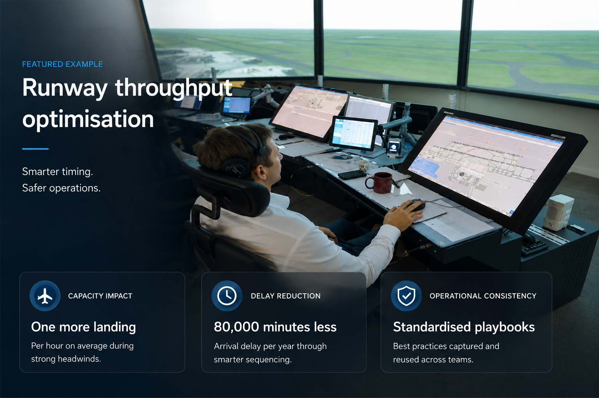

Predictive quality and throughput insights
Machine learning models for production lines to detect quality
issues earlier and support more stable use of capacity.
WayNew builds AI and analytics systems that improve throughput, stability and decision quality across operationally demanding environments.
